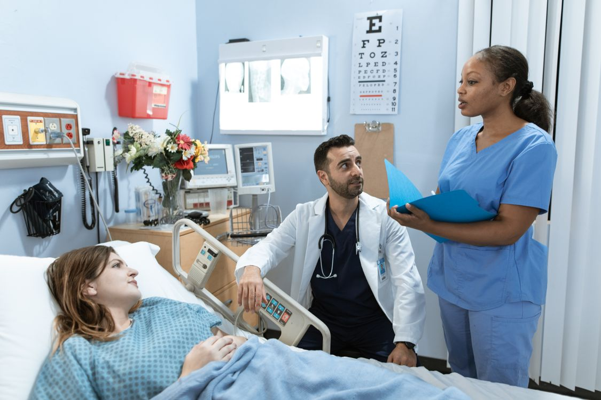

Emergency
Open every day, 24 hours
Local care for local families
Evergreen Community Hospital provides reliable emergency, specialist and everyday medical care in one welcoming location. Our purpose is to help every patient feel informed, respected and supported.
Open every day, 24 hours
Monday-Friday, 8 am-6 pm
42 Park Road, Parramatta
Visitor parking via Oak Street
How we can help
Our clinical departments communicate with each other, helping patients move from diagnosis to treatment and recovery with less confusion.
Fast assessment for serious illness, injury and unexpected health concerns.
Consultations in cardiology, paediatrics, orthopaedics and general medicine.
Physiotherapy, follow-up appointments and practical discharge planning.

A respectful approach
Good healthcare is not only about treatment. We take time to explain options, answer questions and involve patients and families in decisions wherever possible.
Learn about our hospital